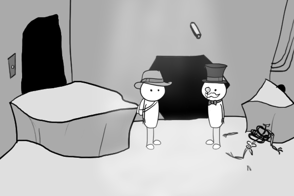

You’d imagine that, at some point, when all things approach infinity, we’ll be able to link Utah Phillips with Zork. The former, a storyteller and a wobbly, seems at least categorically dissimilar enough from the latter, the ur-Interactive Fiction, to avoid easy, triples-formatted, linking.* But I’ve stumbled on evidence to the contrary, in my constant attempts to keep up with the development of what the French refer to as le jeu incroyable: Dwarf Fortress. I’m not sure if it can be explained, or merely described:



All that’s old news, but what’s happening in this forum thread is something I’ve never seen before.**** Instead of coding the game, whether raw or with the various IF utilities available now, the story is being told by a single individual acting as both graphics and parser. Rooms and items are drawn up in advance, posted on the thread, and then a mob of forum-ites argue about what the next step should be (invariably with some rather awful suggestions followed by chastising and community self-policing that labels the originators of such suggestions as trolls) and then the storyteller “parses the commands” (with a few silly results) and posts the new graphics that result from the “player” actions. It’s the re-absorption of a method of digital storytelling back into a very analog and humane medium^ while maintaining the structure and memes of the original (bad suggestions can be disarmed by using the idea of the parser to respond “I don’t understand what you mean by X”). The storyteller as parser is not so alien as one would think–the parsers of many IF games were known and expected to have a personality, often mocking you for your foolish ideas or for your mistakes (and, in many cases, the way that your foolish mistakes lead to your demise). To see it come back and be adopted by an individual outside of the code and embraced by an audience is, well, a sign of something.
*Utah Phillips played Zork! Utah Phillips is the same as Zork! I wonder if exclamation points belong in triples and if they’re handled or if the nerds just see “bang” and don’t even understand that punctuation is useful for more than rogue-like games and procedural code.
**Procedurally developed agrarian landscapes!
***With one notable exception. Hey Riley! Did you hear that AGDI released a version of Quest for Glory II with updated graphics and a pizza elemental???
****Though it may be quite common in the wild, I’m not much of a forum-guy.
^If you’re going to call photoshop and forums “The Digital Humanities” then you might as well call it the Breathing Humanities or the Human-Operated Humanities.
This entry was posted on Thursday, August 12th, 2010 at 1:11 PM and is filed under Art, Digital Innovation, Epiphenomena, Fiction, Games. You can follow any responses to this entry through the RSS 2.0 feed. Both comments and pings are currently closed.